De mooiste kastelen in Luik
Sommige liggen hoog boven de Maas of aan de rand van Ardense valleien, andere in rustige dorpen of nabij natuurgebieden zoals de Hoge Venen. Klik door naar de afzonderlijke kasteelpagina's voor foto's, achtergrondinformatie en praktische tips voor je bezoek.

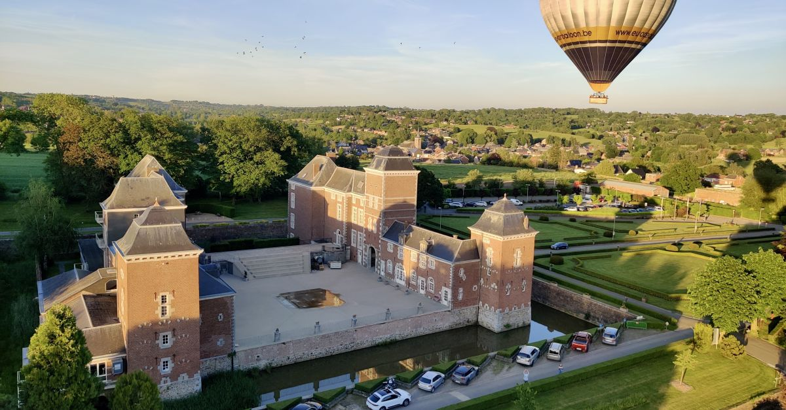
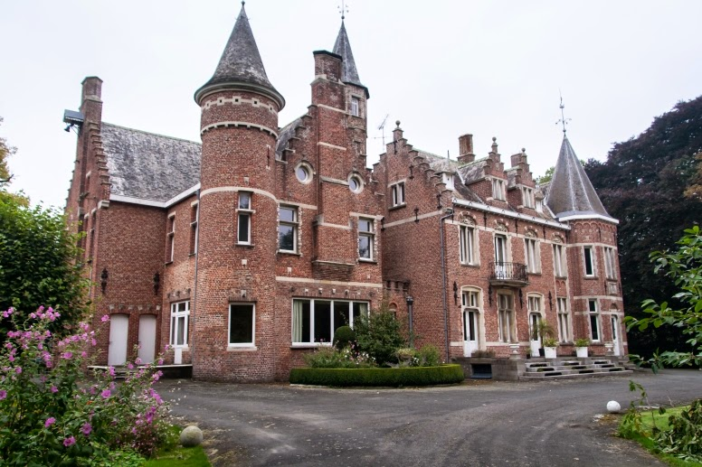

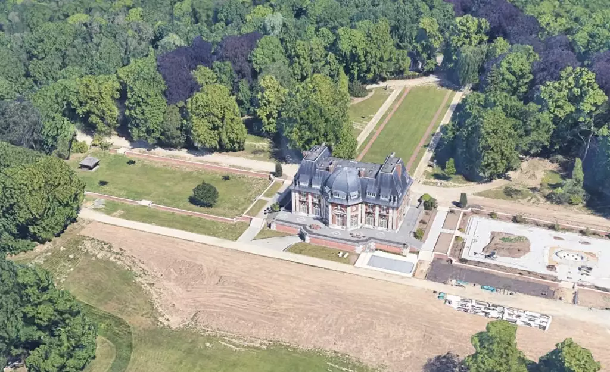
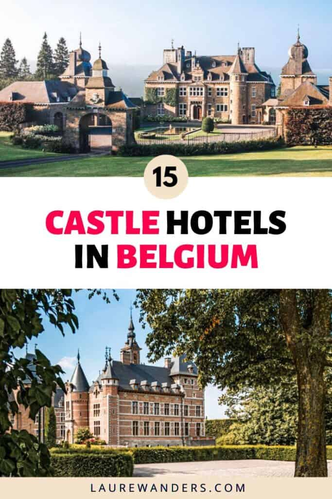
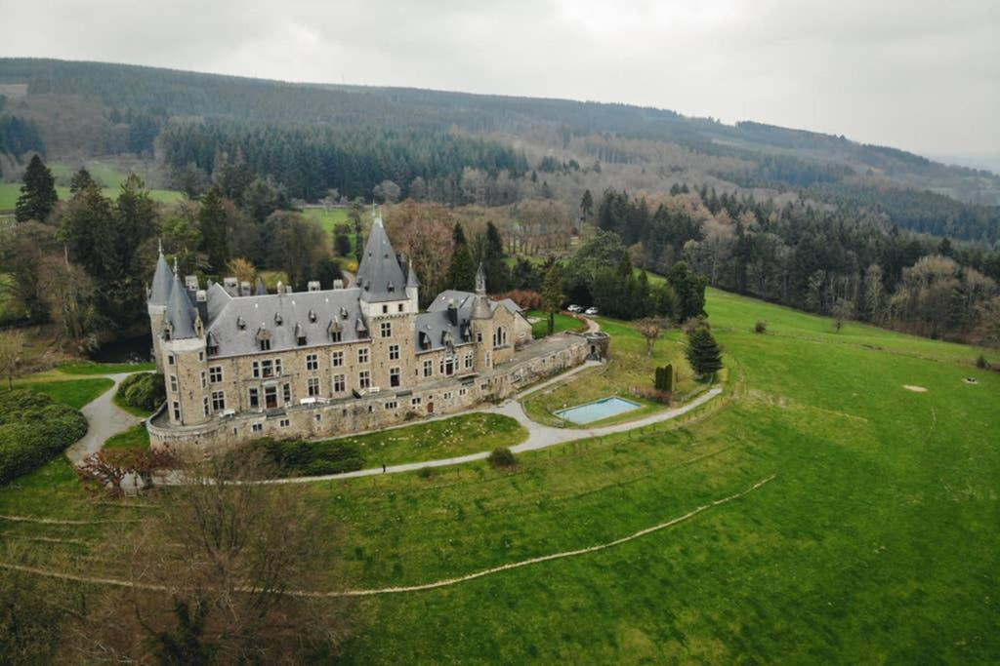
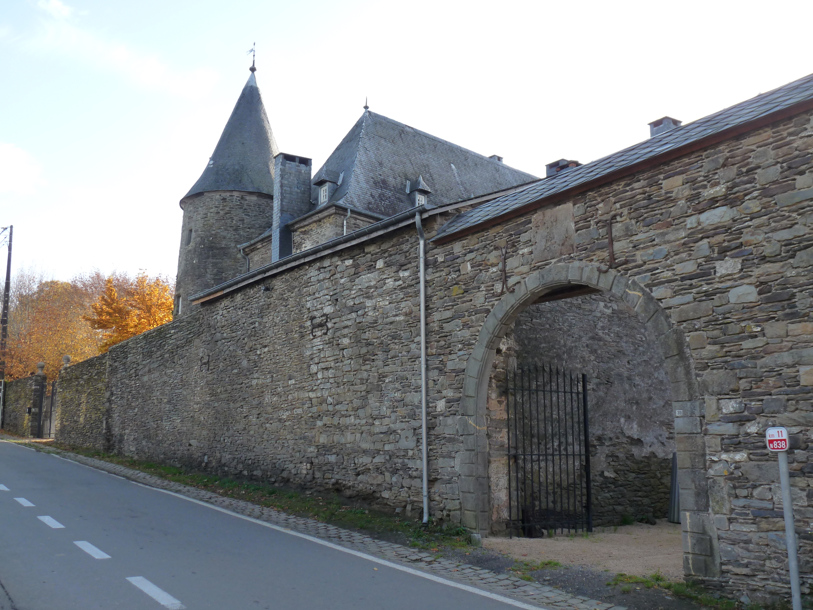


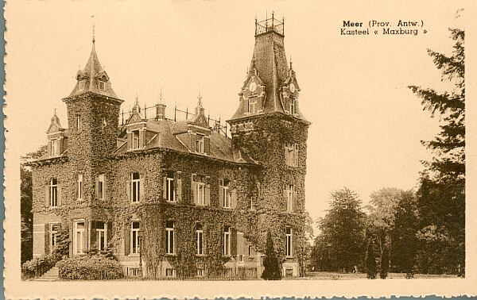
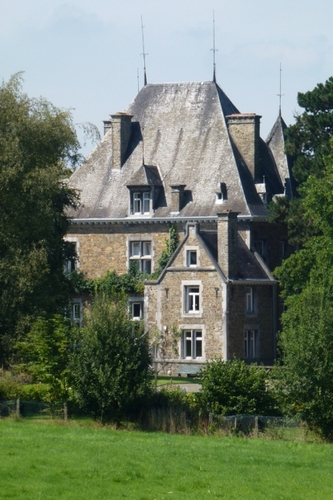
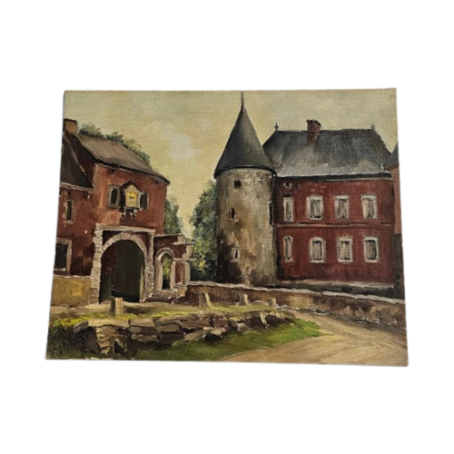

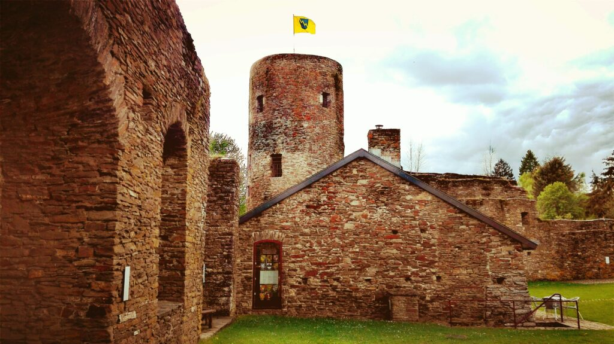
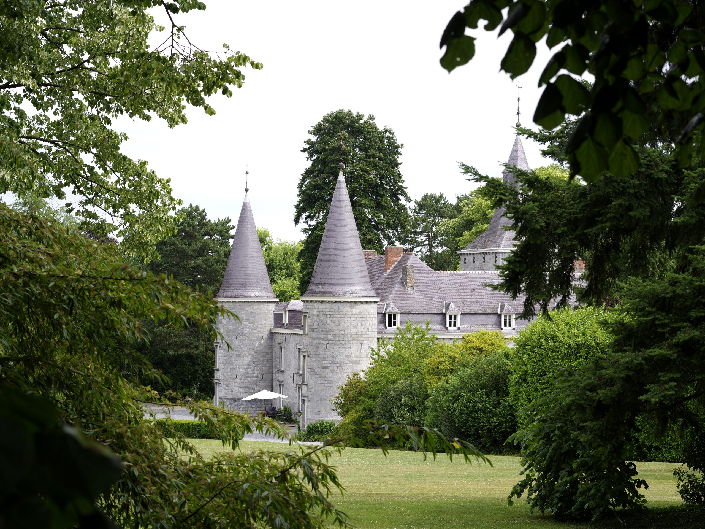
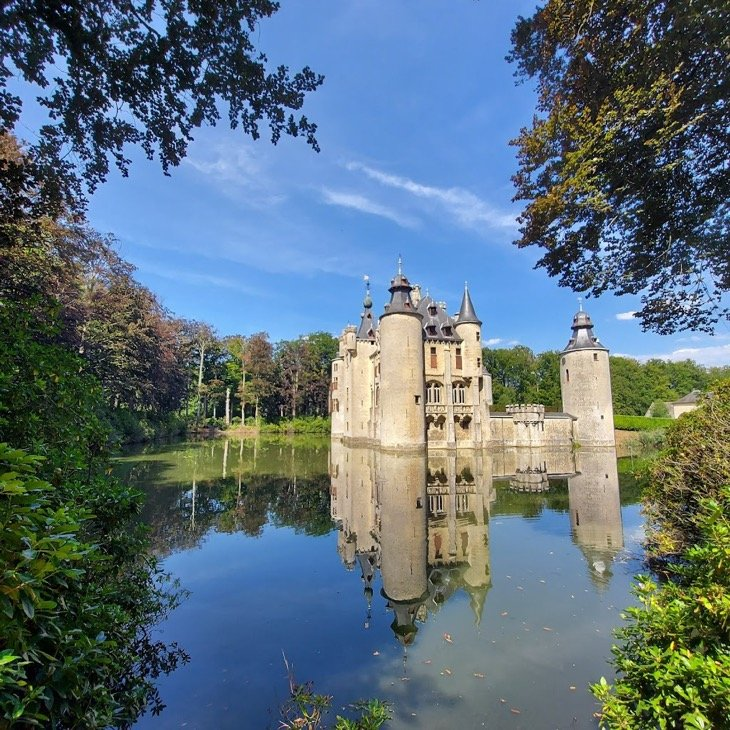
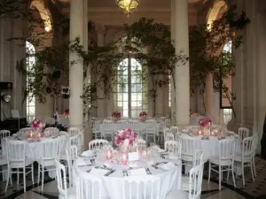
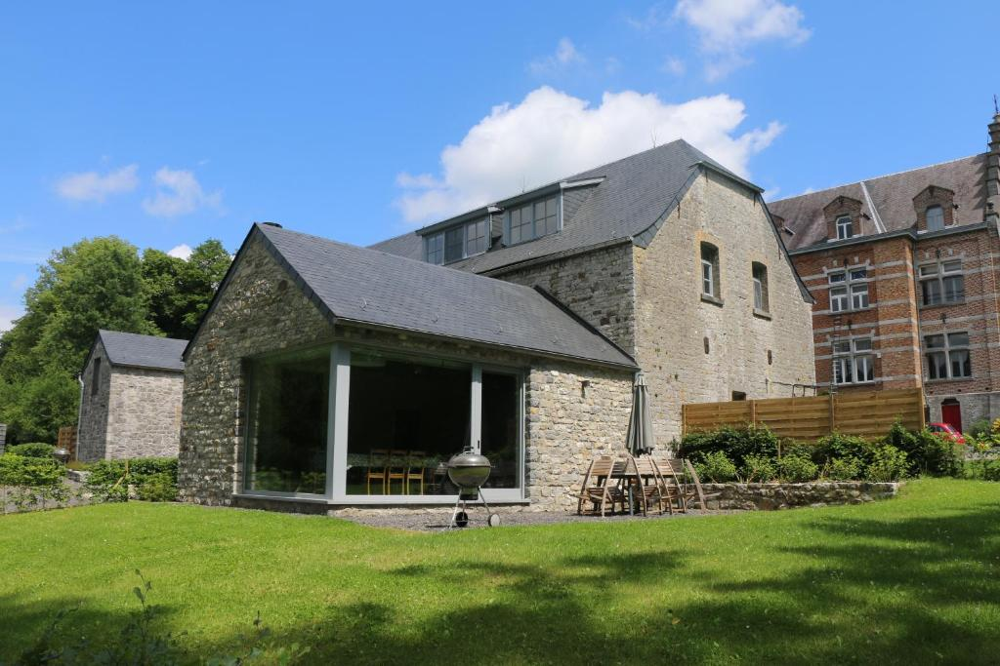
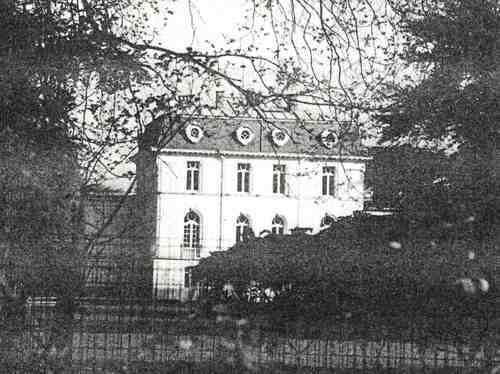
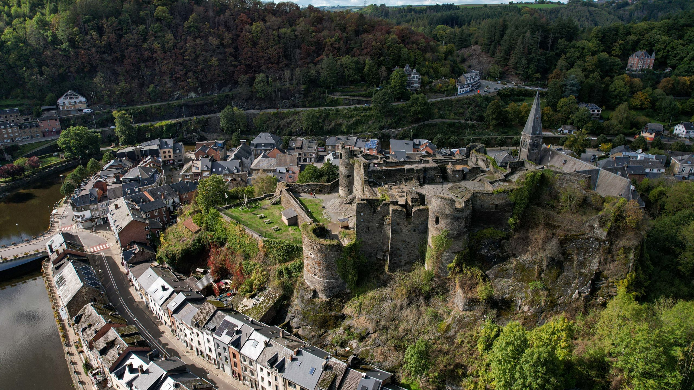

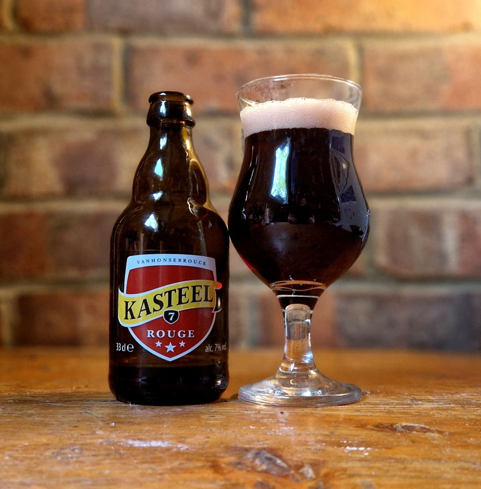
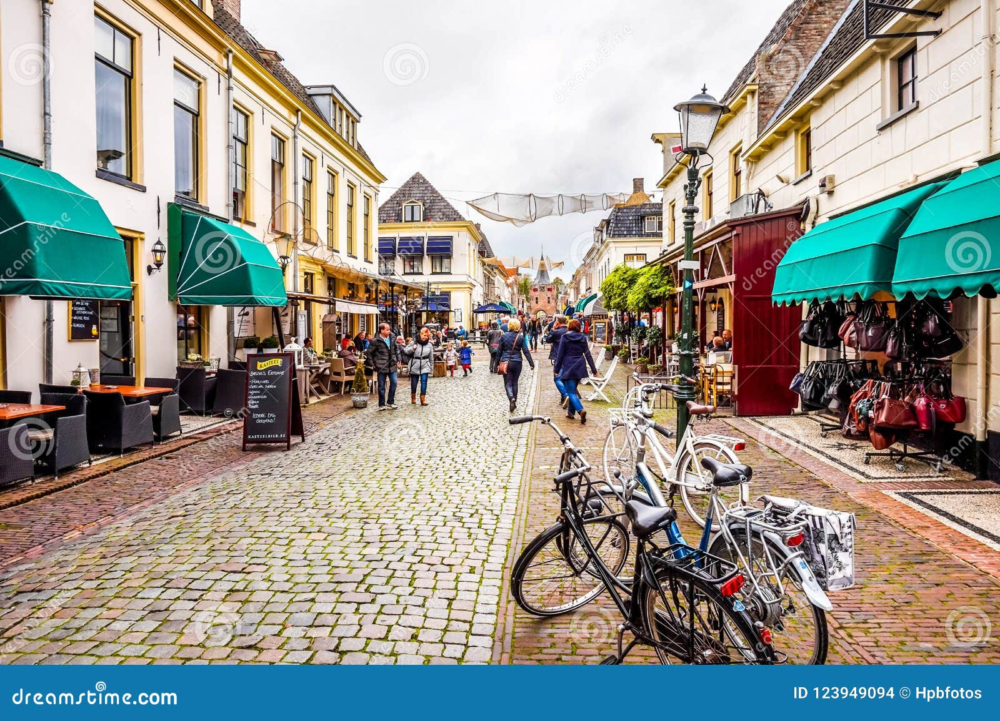
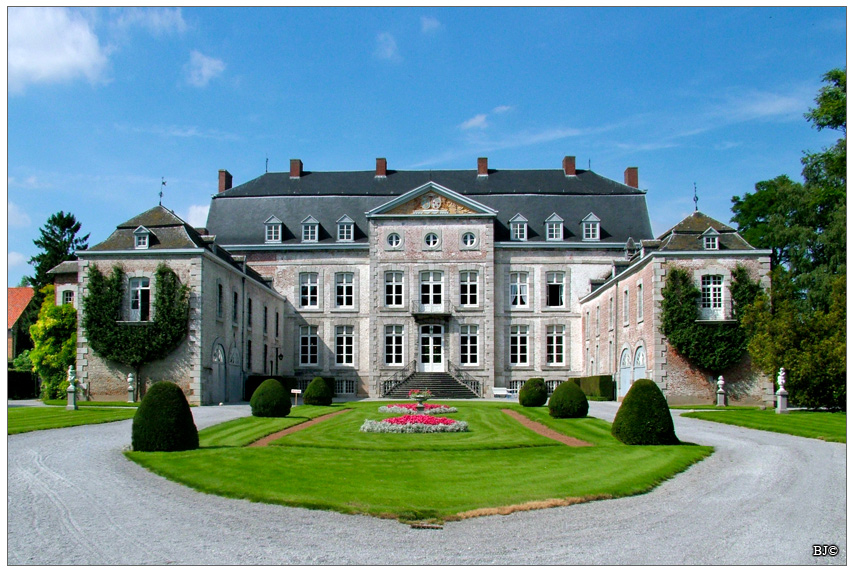